Настройка филиала
Добавление филиала.
Все действия этого раздела выполняем в данных HTTP-сервера.
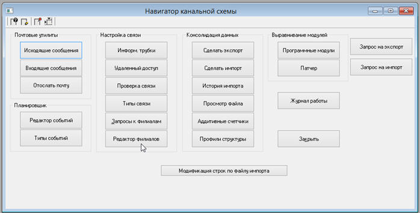
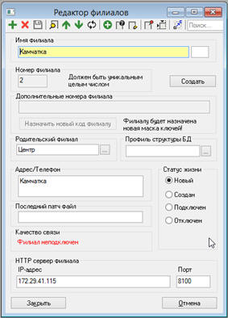
- Имя филиала – произвольное имя
- Родительский филиал – выбираем Центр
- Адрес – адрес расположения офиса, для удобства.
- IP адрес. Пишем адрес, на котором будет располагаться сервер.
- Порт. 8100 стандартный порт, чтобы не путаться.
Нажимаем на кнопку «Создать». Откроется мастер создания филиалов. На одном из шагов будет предложено выбрать путь, куда надо сохранить данные филиала.
Обратить особое внимание к примечанию под этим полем.
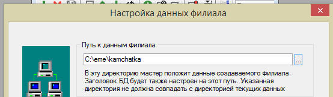
Прописываем адреса филиалов:
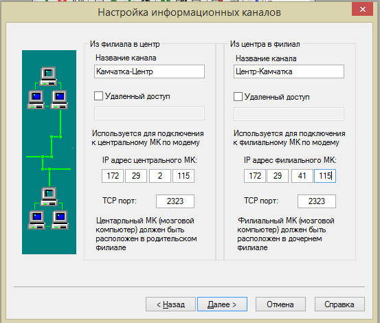
Адрес центрального всегда 172.29.2.115, адрес филиального прописываем самостоятельно.
И нажимаем далее до тех пор, пока не начнут копироваться данные филиала. Может показаться, что программа зависла, но это не так.
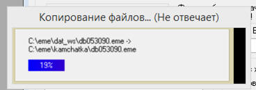
После завершения процедуры программа запустится в монопольном режиме. Если этого не произошло – то запускаем в моно вручную.
Очистка Базы данных.
При первом запуске филиальной базы данных во всех учётных записях будет отсутствовать меню. Чтобы его создать заходим в «Система – Пользователи» выбираем пользователя «Администратор» и нажимаем «Настройка»
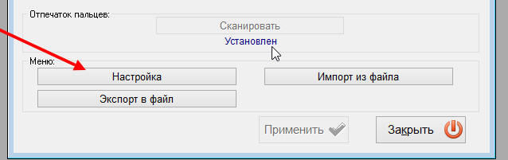
А в настройках нажимаем кнопку «Создать».
Чтобы применить меню надо принудительно сменить пользователя.
На филиал будут скопированы все данные, что были в исходной базе. Теперь их надо удалить.
Первым делом – необходимо выключить гребенчатую схему в настройках рабочей станции. Это позволит удалять данные чужого филиала.
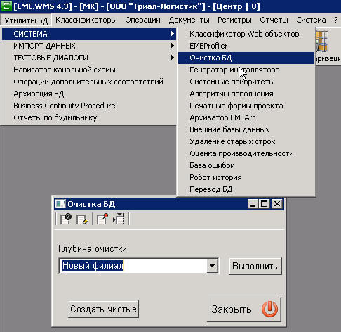
Глубина очистки «Новый филиал». Нажимаем «Выполнить». После завершения очистки обязательно выполнить тест целостности базы данных. В случае ошибок – нажимать кнопку F2. В тесте целостности поставить галочки «Монотонность сортировки» и «Счетчик ссылок».
Обязательно включаем гребенчатую схему!!!!
Создаём склад в справочнике «Классификаторы – Склады и ячейки – Склады» на филиале.
- Предварительно создаём стратегию склада.
- Предварительно создаём новое место в справочнике «География»
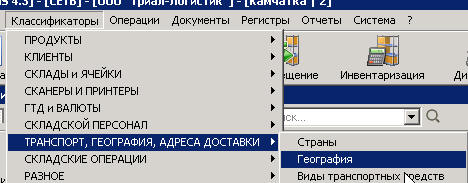
- Создаём новую запись справочника «Склады»
- Вводим код. WRHX, где Х это порядковый номер филиала. Номера повторяться не должны. Пробела также быть не должно. Также этот код нужно прописать в настройках рабочей станции на сервере и в рабочей станции.
- Вводим наименование склада.
- Выбираем стратегию из ранее созданной.
- На вкладке «разрешения» добавляем все доступные транзакции.
- На вкладке «Географическая информация» выбираем ранее созданное место.
- На вкладке «Интерфейсы» прописываем строку подключения «ODBC:Driver={SQL Server};Server=172.29.2.115\SQLEXPRESS;DataBase=WMS_ERP;UID=sa;PWD=FlvbybcnhfwbZ#;» Естественно меняем адрес сервера
- На вкладке «РФ-технология» ставим галочку «Возможно применение РФ-технологии». Если вдруг в дальнейнем не создаются приказы для склада, сектора или ячейки, то значит отсутствует эта галочка. Так же ставим галочку «Ввод строк в списание».
- Обязательно добавляем привязанный склад Брака. Он может быть без ячеек, но он должен быть для того, чтобы сборщик мог нажимать на кнопку «Брак».
- На вкладке разрешения задаём транзакции «Основную», «Дополнительную», «Региональную».
Запуск сервера филиала.
- В настройках рабочей станции меняем адрес HTTP сервера на адрес филиала.
- В настройках рабочей станции меняем «Директорию данных» ХТТП сервера на «C:\wms\etc\web»
- В настройках рабочей станции меняем «Директория архивного экспорта» на «C:\wms\etc\History»
- В настройках рабочей станции меняем директорию резерва на «C:\wms\etc\backup»
- Помещаем в архив данные филиала и копируем на сервер.
- Также добавляем в архив и отправляем на сервер филиала папки «kernel.x64» и «metaproj».
- На диске С создаём папку «eme» и в неё распаковываем всё, что было скопировано.
- Делаем три копии папки с данными. Называем их так «dat_server», «dat_http», «dat_ws».
- dat_http нужно запустить в моно режиме и сменить настройку рабочей станции «HTTP сервер. IP адрес» прописав там адрес сервера.
- Запускаем db.exe от имени администратора. В поле HDR-файл выбираем файл из папки «dat_server». Сетевой режим ставим «Сервер». И жмём кнопку «Установить сервис». Появится сообщение, что сервис установлен.
- Не закрывая окно db.exe выбираем HDR-файл выбираем файл из папки «dat_http». Сетевой режим «Рабочая станция». Ставим галочку «Мозговой компьютер» и галочку «HTTP-сервер». Снова нажимаем кнопку «Установить сервис». Появится сообщение, что сервис установлен.
- Теперь можно запустить программу «service.exe» и запустить наши службы. Сначала сервер, а потом http.
- В панели управления компьютера нужно найти службы компьютера и для обеих служб ЕМЕ на вкладке «Восстановление» для полей «Первый сбой», «Второй сбой» и «Последующие сбои» проставить значение «Перезапустить службу».
- В режиме приложения запустить «HTTP-сервер». В настройках планировщика событий сделать неактивным событие «Экспорт», а в параметрах будильника выбрать пункт «Только вручную».
- Открыть HTTP-сервер центрального филиала. Зайти в навигатор канальной схемы – Редактор филиалов. Найти филиал над которым сейчас работали и нажать на кнопку «Подключить». В открывшемся окне сначала пингуем филиал и если есть ответ нажимаем «Ок».
- Там же, в центральном филиале. В навигаторе канальной схемы находим «Информационные трубки» и деактивируем ту, которая идёт от филиала в центр.
Настройка обмена между 1С и WMS
- Устанавливаем SQL Express 2008 и SQL Management на сервере филиала (\\172.29.3.115\общие файлы\soft.7z).
- Если постоянно просит перезагрузки – то http://t-sql.ru/post/A_computer_restart_is_required.aspx
- В интерфейсе ERP-WMS нужно переформатировать структуру внешней БД.
- Создать файл ERPEngine.xml и положить его в специальную папку на сервере WMS.
- В 1С филиала создаём запись в справочнике «ЕМЕ.ВМС Склады». Указываем путь к файлу данных, контракты, склады, логистов и бухгалтеров. Заполняем почтовые адреса получателей отчётов. Включаем обмен, выгружаем товарные группы и снова выключаем обмен.
Настройка модулей и рабочих станций.
Перед использованием необходимо выполнить дополнительные настройки.
Настройки модулей выполняются на любой рабочей станции филиала. Настройки рабочей станции – только на той рабочей станции, на которой они должны быть.
- Настройка модулей. «Затирать штрихкод при импорте товара из 1С». Ставим «Да».
- Настройка модулей. «Разрешить с ТСД указывать большее количество». Ставим «Да».
- Настройка модулей. «Отключить учет статусов товаров по срокам жизни». Ставим «Да».
- Настройка модулей. «Можно сканировать минимальную вместо текущий». Ставим «ЛЮБУЮ».
- Настройка модулей. «Приравнять приказ MS-OA к подборке из пикинга». Ставим «Да».
- Настройка модулей. «Подтверждать постановку в ячейку гетеропаллеты». Ставим «Нет».
- Настройка модулей. «Показывать старые пачки заказов». Ставим «Нет».
- Настройка модулей. «Объединение по единицам измерения». Ставим «Да».
- Настройка модулей. «Объединять сроки годности при подборе из одной ячейки». Ставим «Нет».
- Настройка модулей «Учёт в штучках». Ставим «Да».
- Настройка модулей «Не показывать SSCC при инвентаризации». Ставим «Да».
- Полное описание смысла настроек можно найти здесь: Bitrix24\Инструкции ВМС\0) Администратору
Настройка будильников.
Все действия этого раздела выполняются на хттп-сервере.
Заходим в «Утилиты БД – Навигатор канальной схемы – Редактор событий».
Должны быть созданы следующие события:
- Авто списание брака. OffriteBByTimer(). Каждые 3 часа. Списывает брак из ячеек отмеченных зоной брака.
- Автоперевод заказов. RobotRunNextStatus(). Каждые 15 минут. Переводит товары со статуса «Подобран» на статус «Закрыт». Должно выполняться автоматические, но почему-то не всегда происходит. Так что это больше для подстраховки.
- Выгрузка предпросчёта. DoUnderloadsExport(). Каждые 5 минут. Выгружает остатки товара для выполнения предпросчёта. Производится в 12, 14, 16 и 17:45.
- Импорт сообщений ERP. ImportERPMessages(). Каждую минуту. Импортирует данные из 1С.
- Объединение регистров. MergeByTimer(). Ежедневно в любое время. Объединяет регистры. Нужно для корректной подборки товаров, чтобы не было лишних разбиений внутри ячеек.
- Проверка блокировки ячеек. CheckDocumentLock(). Каждый час. Проверяет, заблокированы ли ячейки размещения товаров в документах прихода, для которых запрещён уход.
- Проверка стоковых статусов. MetC_WMS.dll. rf_auto_change_statuses. Ежедневно.
- Рассылка почты. RunReport(). Каждые 8 минут.
- Сборщик мусора в ERP-WMS. RunGarbageCollector(). Удаляет лишние данные. Каждый час.
Рассылка почты.
Для рассылки доступны следующие отчёты:
- ReportControlBBDMail – Контроллинг срока годности. Рассылается раз в неделю по понедельникам.
- MovementFormMail – Содержит перечень товаров, у которых осталось ровно 21 день. Или 5 дней для скоропорта.
- repPercentStockForMail – Содержит перечень товаров, остатки которых менее заданного процента. На данный момент это 45%. Включаются также и те товары, которые имеют, срок годности более указанного процента, но в количестве менее 10 упаковок. Рассылается раз в день.
- repStockAllStatusesForMail - Полный перечень остатков товаров с разбиением про срокам годности. Также содержит информацию об остатках в 1С. Рассылается раз в день.
- SelfDiagMail. Отчёт, содержит данные о складских ошибка. Рассылается раз в день.
- UnderLoadForMail. Количество недогрузов по сводным накладным. Рассылается раз в день.
Заведение транзакций.
Необходимо создать транзакции для прихода, ухода, перемещения и инвентаризации. Следует помнить, что для каждой транзакции должна создаваться собственная стратегия. И собственные параметры поиска ячеек.
Для прихода нужны минимум 5 транзакций:
- Объединение регистров. ЭТУ ТРАНЗАКЦИЮ СОЗДАЁМ ВРУЧНУЮ ПЕРВОЙ!
- 102. Приём целых паллет c наклейками.
- 111. Приём целых паллет без наклеек
- 108. Возврат из торговой точки.
- 109. Размещение переупаковки.
Для ухода нужны следующие транзакции:
- 201.Отгрузка по сводным со склада Карьерная
- 202.Отгрузка хороших сроков
- 204.Отправка на регионы и МСП
- 208. Отгрузка день в день (для любого товара)
- 305. Свободное перемещение. НЕ ЗАБЫТЬ НАСТРОИТЬ ПАРАМЕТРЫ ПЕРЕМЕЩЕНИЯ!!!
- 401. Блокирующая.
- 402. Неблокирующая.
- Списание товара из ячеек.
Заведение ячеек.
- Классиф. Скл. – разметка – шаблон (сек – кол – ур)
- Задаём № сектора, галку «RF технология», если есть прописываем примечание – сохраняем.
- Для зоны собранных заказов (999) надо указать «Зона ОА в стеллаже»
- На вкладке «Разметка» создаём ячейки: Задаём тип ячеек и указываем
- Для ячеек установить точное сравнение адреса.
Заведение продукции
Установить кратность продажи товаров.
Стратегия продукта
После выгрузки товаров из 1С необходимо подправить параметры стратегии продуктов в соответствии со снимком экрана:
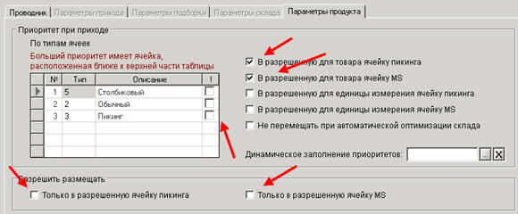
Создание пользователя филиала.
Для того, чтобы на филиале не работали под администратором, необходимо создать учётную запись.
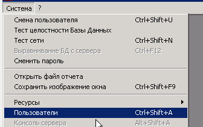
В открывшемся окне нажимаем кнопку «+» и пишем имя пользователя. Как правило это будет слово «Оператор» и название филиала (или склада, если складов на филиале несколько).
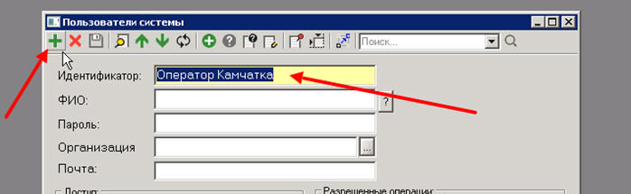
Импортируем меню для этого пользователя:
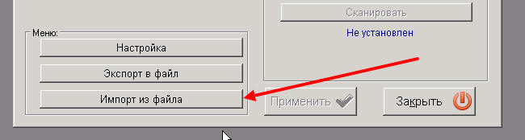
Файл выбираем по пути «\\172.29.1.167\Distr\EME.WMS\Настройки филиала\Меню оператора EME.emenu»
В группе галочек «Привилегии» и «Разрешённые операции» проставляем все галочки.